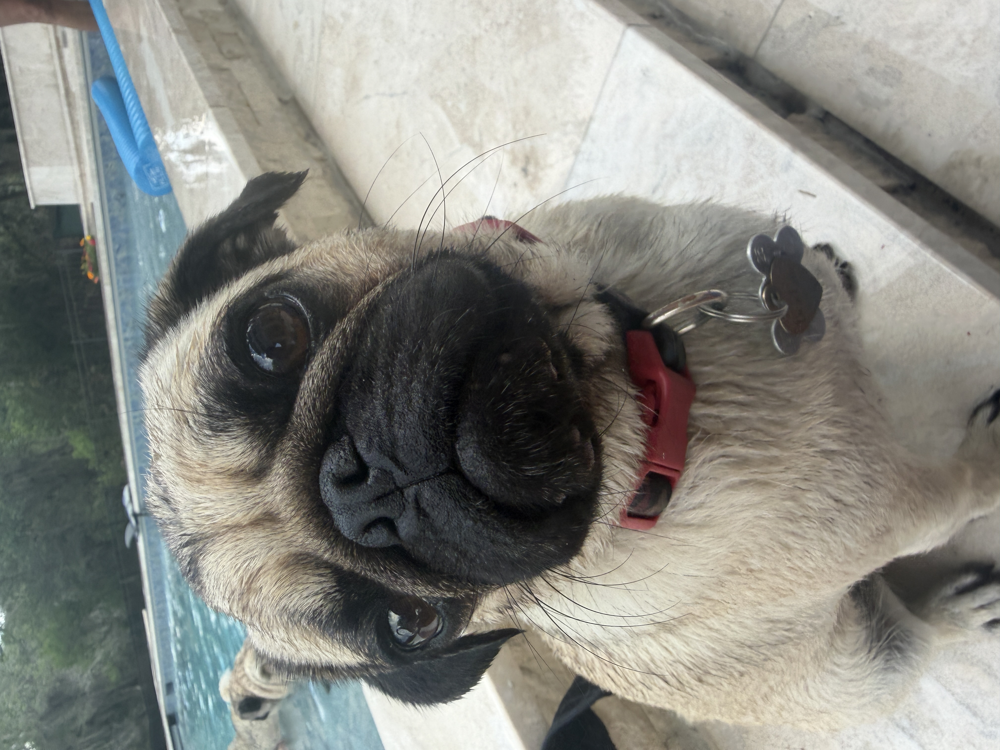
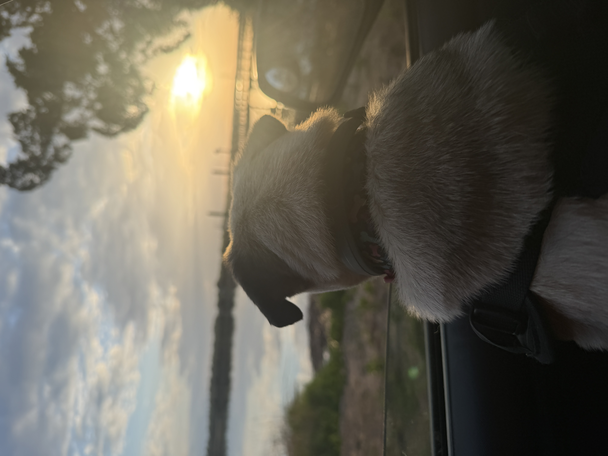
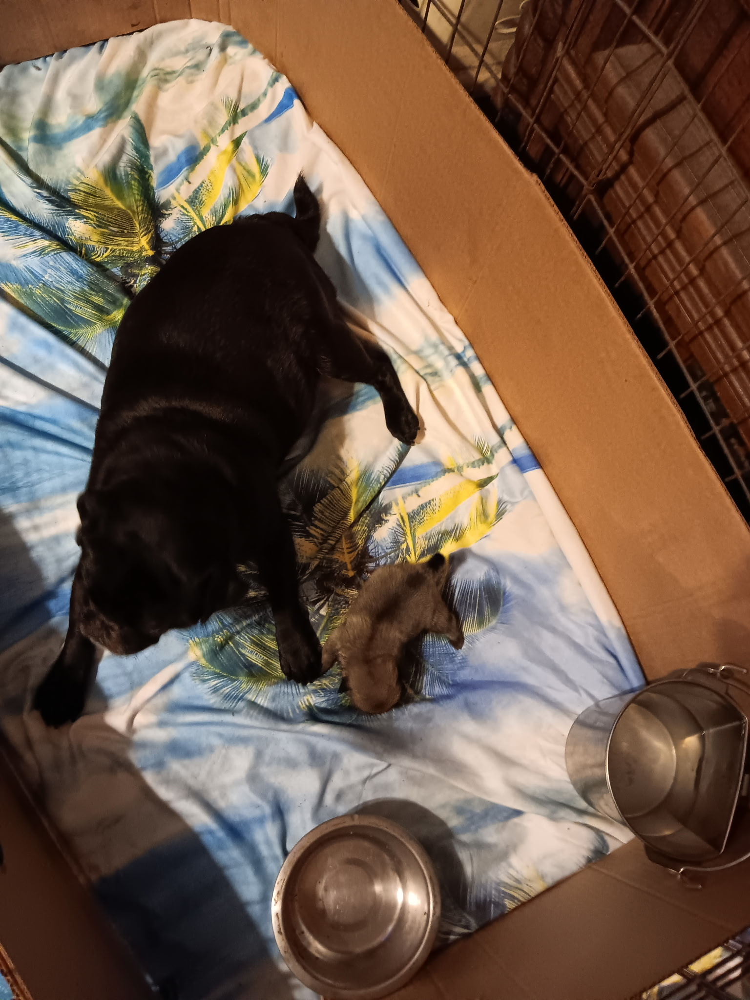

About
About Barbie
Barbie (Brinkley's Tallulah Barbie Girl) is a fawn Pug from the Dermit line and the face of this small holding in North Charleston: breeding when the timing is right, plus dog sitting and grooming for dogs in our care.
We keep the public site simple. Day-to-day life and updates live on Instagram and Facebook.
Breeder name stays private per Legal — not published.
Health testing
Completed results we can document on inquire (we do not host certificates on this site):
- NME (PDE susceptibility markers) — VGL & OFA: N/N
- Ophthalmic exam — Charleston Animal Eye Specialists (Feb 2026) — exam completed; grade/result shared on inquire
- AKC DNA — order on file; result/status shared on inquire
Lab and exam results are not a guarantee of lifelong health, temperament, or litter outcomes.


